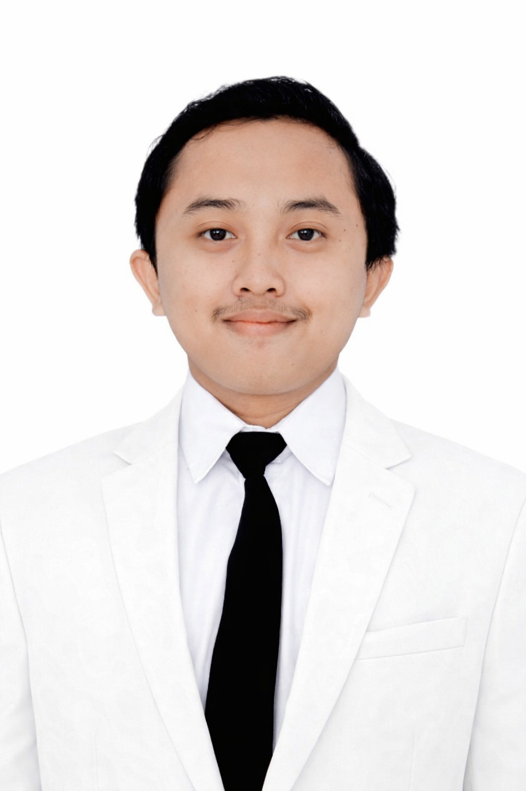
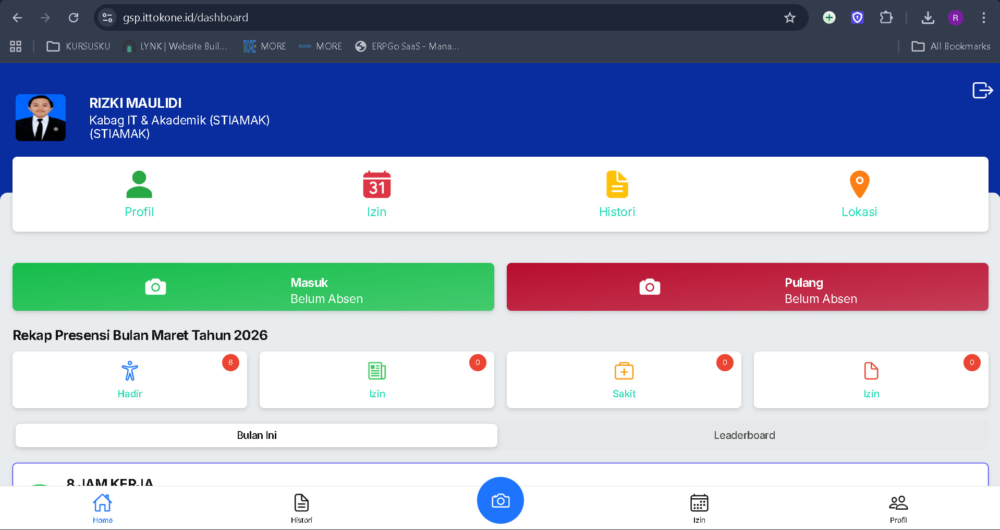
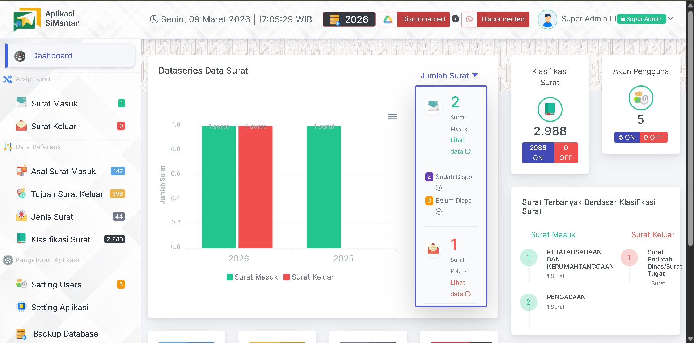
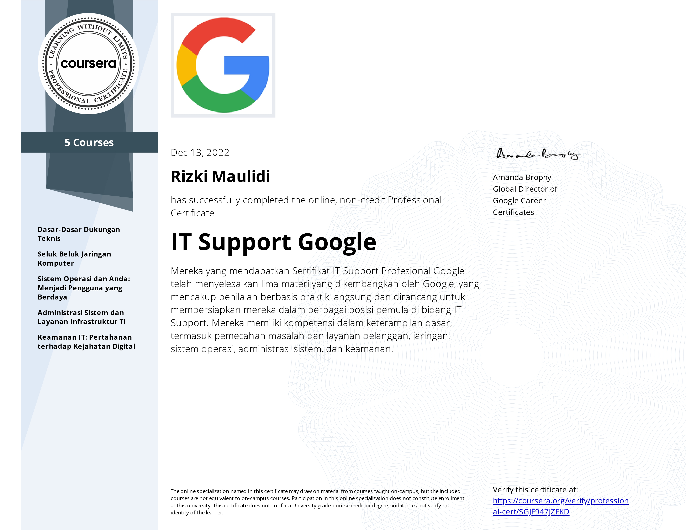
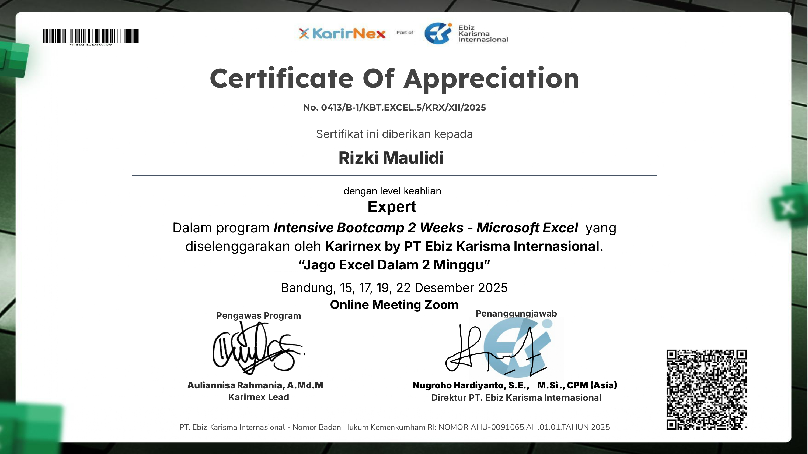
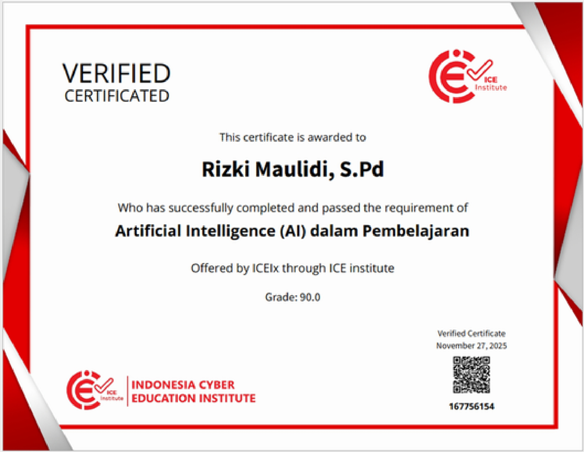

Infrastructure & Support
Experienced in managing LAN/WiFi environments, device maintenance, troubleshooting, create software PWA, software installation, user support, and operational continuity.
IT professional with 6+ years of experience in higher-education environments, specializing in IT operations, academic systems, user support, network infrastructure, documentation, and process reliability. I bridge technical execution and operational needs to keep systems stable, secure, and efficient.
Years of hands-on IT operations, support, and systems management.
Infrastructure, devices, and workflows maintained and improved.
Technical issues resolved across systems, users, and operations.

Reliable IT execution with strong operational discipline, technical support excellence, and process improvement mindset.
IT Support, System Administrator, IT Operations, Academic System Officer, Infrastructure Support, Technical Administration.
This portfolio is structured to help recruiters and hiring managers quickly understand my strengths: infrastructure reliability, support responsiveness, systems administration, documentation discipline, and operational impact.
Experienced in managing LAN/WiFi environments, device maintenance, troubleshooting, create software PWA, software installation, user support, and operational continuity.
Hands-on experience supporting academic information systems, administration workflows, data handling, and technical support for institutional operations.
Strong capability in building SOPs, user guides, structured documentation, and process references that improve quality, consistency, and organizational readiness.
A balanced profile across IT support, systems, networking, documentation, and user-facing operations.
Professional progression across administration, IT support, and leadership in IT and academic systems.
STIA & Manajemen Kepelabuhan Barunawati — Surabaya
STIAMAK Barunawati — Surabaya
STIAMAK Barunawati — Surabaya
My background combines technical reliability, user-facing responsiveness, operational structure, and documentation discipline. This creates a profile that fits environments where uptime, support quality, and process consistency are critical.
I focus on practical outcomes: stable systems, faster issue resolution, cleaner workflows, stronger support experience, and documentation that scales across teams.
Visual project cards that help recruiters quickly see the type of work I handle. Replace the screenshots below with your real project images.

Managed and supported academic information systems used by lecturers, students, and administrative staff. Ensured system reliability, handled technical issues, assisted data operations, and maintained smooth academic workflows across departments.
Maintained and troubleshooted campus LAN/WiFi infrastructure, resolving connectivity issues, optimizing device access, and ensuring stable internet connectivity for academic operations and daily institutional activities.

Designed and documented operational SOPs, technical procedures, and academic workflow guidelines to standardize processes, improve service consistency, and support institutional readiness for audits and accreditation.
A dedicated proof section for recruiters. You can show certificate thumbnails and also link all of them through Google Drive.

Foundational proof of skills in troubleshooting, networking, systems, customer support, and IT infrastructure fundamentals.

Advanced Excel capability for structured work, data handling, analysis support, and operational productivity.

Training related to practical AI application in learning and technology-enabled institutional environments.
Replace the Google Drive URL below with your own folder link so hiring managers can view all certificates in one place.
View All CertificatesI am open to opportunities in IT Support, System Administration, IT Operations, Infrastructure Support, and Academic Systems roles. This portfolio is designed to make evaluation easy for recruiters, hiring managers, and technical leads.